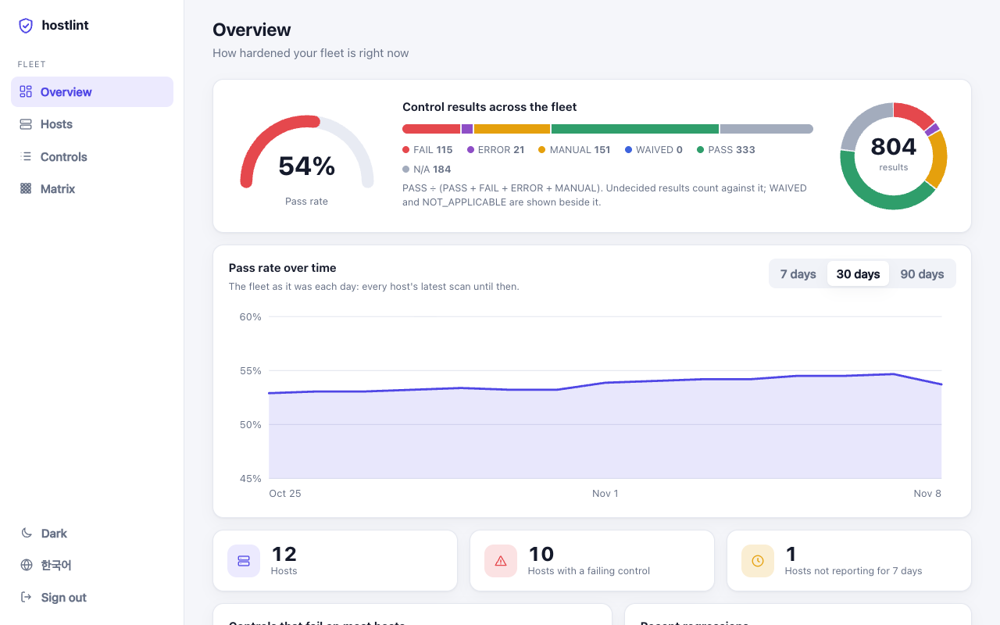
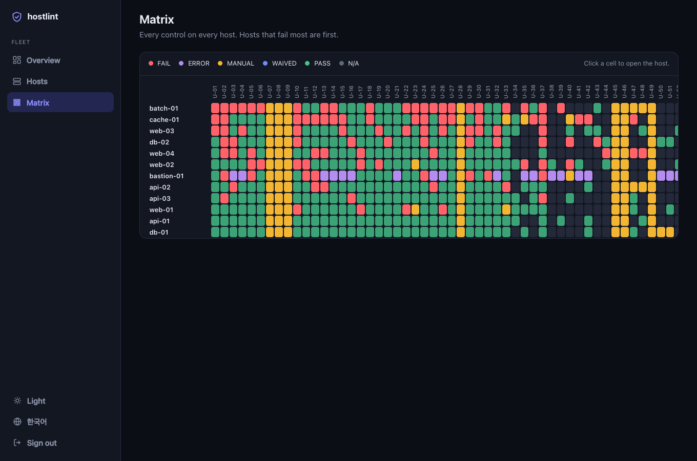

hostlint
A Linux host's security configuration, checked like code.
One static binary. Run it as root; get one result per control, with the value, the file and the line behind every verdict. It only reads: it never changes the host.
Why hostlint
Evidence for every verdict
The value, the file and line, explicit or default. No "FAIL" without a reason.
No false PASS
When a control cannot be decided (an unreadable file, a cut-off scan) the result is ERROR or MANUAL, never a guessed PASS. Configuration is read the way the program reads it: PAM like libpam, login.defs like shadow-utils, shell files like bash.
Observation only
Rules are data, not scripts: they cannot run commands. Password hashes, keys and tokens never appear in a result.
Hosts and images
Scan a running system, a filesystem mounted elsewhere, or a container image straight from the archive
docker savewrote: nothing is mounted, run or written.Built for pipelines
Table, JSON (with a schema), SARIF and JUnit; one self-contained HTML report for many hosts; waivers with a reason and an expiry in hostlint.yaml.
Signed releases
Archives, .deb and .rpm packages, SBOMs and checksums, signed with Sigstore and carrying build provenance.
What it looks like
$ sudo hostlint scan
hostlint v0.1.0 · kisa-2026 · web-01 (Ubuntu 24.04.5 LTS)
✗ FAIL U-02 Password policy [high]
✗ accounts.password-min-length — Passwords have a minimum length
pam.password_quality.module = ""
pam.password_quality.settings.minlen.value: not set
✗ FAIL U-12 Session timeout [low]
✗ accounts.session-timeout-set — Idle shells time out
not set; expected a value matching [1-9][0-9]*
✗ FAIL U-18 Ownership and permissions of /etc/shadow [high]
✗ files.shadow-perms — /etc/shadow is owned by root and readable by root only
/etc/shadow: root:shadow 0640 — mode 0640 exceeds 0400
? MANUAL U-23 Set-ID programs are reviewed [high]
? files.review-setid — Review the set-ID programs
/usr/bin/chage 2755 root
/usr/bin/chsh 4755 root
… and 10 more
kisa-2026: 67 controls — 7 FAIL, 10 MANUAL, 29 PASS, 21 NOT_APPLICABLE
A dashboard for the whole fleet
Hosts scan themselves and push the result to hostlint server, which keeps the history and shows the fleet: pass rate, the controls that fail most, regressions since the last scan, a matrix of every control on every host, and the evidence behind each result. The server never connects to a host; to scan one on demand, its hostlint agent dials out and waits for a “scan now” from the dashboard, and can only be asked for a profile the host allows. Try it with no host at all: hostlint server demo.


Container images in CI
The same checks run on an image before it is deployed. hostlint scan --image-tar reads a docker save or OCI archive with no daemon and no registry, and for every supported distribution it gives the same result as a scan inside a container made from the image. The repository is also a GitHub Action that installs a verified release, uploads SARIF to code scanning and fails the build at the severity you choose.
docker save app:1.4 -o app.tar
hostlint scan --image-tar app.tar --fail-on high
# GitHub Actions
- uses: with-developer/hostlint@v0.20.0
with: {image: "app:ci", fail-on: high, sarif-file: hostlint.sarif}
Scanning images · Using hostlint in CI
Supported targets
Ubuntu 22.04, 24.04, 26.04 · Debian 12, 13 · Rocky Linux and AlmaLinux 9, 10 · Amazon Linux 2023 · CentOS/RHEL 7 (best effort). The first profile is the KISA CII technical vulnerability assessment guide, 2026 edition (Unix, U-01–U-67); other baselines are added as profiles over the same checks.
Quick start
Install the latest release (v0.20.0), or build from source:
go install github.com/with-developer/hostlint/cmd/hostlint@v0.20.0 sudo "$(go env GOPATH)/bin/hostlint" scan # many hosts, one report sudo hostlint scan --format json --output web-01.json hostlint report *.json --output report.html # or a server with a dashboard (try it: hostlint server demo) sudo HOSTLINT_TOKEN=hlt_ing_... hostlint scan --push https://hostlint.example.org:8443
Docs: README · hostlint.yaml · Releasing · Security